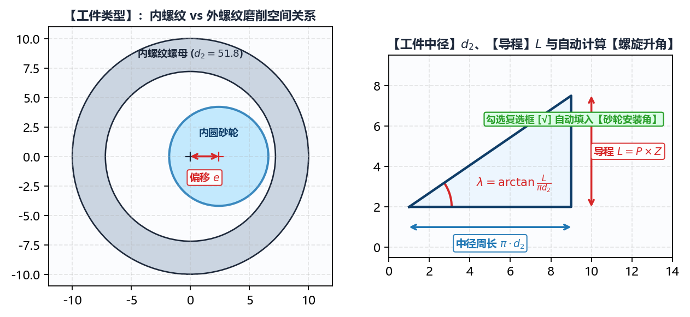

2.1 工件几何与螺旋方向
在 基本参数 面板顶部，前四项参数共同决定了目标工件的三维螺旋面空间方程。任何一项设置失误都会导致包络接触线空间曲率计算方向反转。
一、工件类型 与 螺纹旋向 的空间几何图解

1. 工件类型（内螺纹 / 外螺纹）
内螺纹：- 典型零件：滚珠丝杠螺母（如
BNS-2020-R、BNS-5250-2S）、行星滚柱丝杠内齿圈（如PRS-2065-3S）。 - 啮合特征：砂轮伸入工件内孔进行内啮合磨削，砂轮外径必须小于工件内孔小径。由于砂轮外圆柱面与螺母内螺旋面同向弯曲，空间接触线极长，曲率干涉比外螺纹严重得多；同时砂轮安装角往往受内孔长度限制无法达到理论螺旋升角，必须依赖 IGD 的空间包络算法精确修正砂轮截形。
- 联动影响：切换为
内螺纹时，绘图工具 -> 螺纹 -> 双圆弧中的直径标签会自动切换为工件大径（滚道谷底最大直径），且高级参数 -> 初始化配置中的外螺纹模式会自动隐藏。
- 典型零件：滚珠丝杠螺母（如
外螺纹：- 典型零件：外滚珠丝杠轴、行星滚柱丝杠主丝杠、双螺杆压缩机阴阳转子（如
SRM-300F、SRM-301M）、各类精密蜗杆（如ZC1-9808）及渐开线齿轮/花键（如SPL-60T）。 - 啮合特征：砂轮在工件外部进行外啮合磨削（或在
外螺纹模式=内旋风铣时由内切刀盘包络外螺纹）。 - 联动影响：切换为
外螺纹时，绘图工具 -> 螺纹 -> 双圆弧中的直径标签自动显示为工件小径，且高级参数 -> 初始化配置中会显示外螺纹模式（可选普通砂轮或内旋风铣）。
- 典型零件：外滚珠丝杠轴、行星滚柱丝杠主丝杠、双螺杆压缩机阴阳转子（如
2. 螺纹旋向（右旋 / 左旋）
右旋：顺时针旋转时沿轴向远离观察者推进（绝大多数标准滚珠丝杠、蜗杆及压缩机阳转子）；左旋：逆时针旋转时沿轴向推进（如反向丝杠螺母、双螺杆压缩机中与右旋阳转子配对的左旋阴转子SRM-300F）。- 工程注意事项：当左/右齿面不对称（例如左、右半角不等的锯齿形螺纹，或压缩机阴阳转子型线）时，改变
螺纹旋向会直接交换空间螺旋面的迎刃侧与背刃侧。此时请结合DXF 齿形类型右侧的镜像开关以及右下角加载图形/干涉齿形视图核对左右齿侧对应关系。
二、工件中径、导程 与自动螺旋升角
| 参数名称 | 单位 | 工程定义与输入要求 |
|---|---|---|
工件中径 () |
螺旋面计算基准圆柱直径（对应 DXF 齿形局部坐标系中 基准线所在的工件直径）。必须满足 。 | |
导程 () |
工件旋转一整周（）时螺旋线沿轴向移动的距离。对于多头螺纹、多头蜗杆或多齿转子，。 |
中径螺旋升角 的实时联动解算
只要在 工件中径 () 与 导程 () 中输入有效正数，软件会立即根据空间螺旋线公式实时计算出中径处的理论螺旋升角 ，并显示在下方 砂轮安装角 右侧的蓝色数值标签中（保留 4 位小数）：
- 自动同步复选框（默认勾选）：
- 当
砂轮安装角右侧的复选框处于勾选状态时，只要修改工件中径或导程，系统会自动将计算出的理论螺旋升角 填入砂轮安装角输入框（这是外螺纹磨削与蜗杆磨削的标准设定，此时砂轮轴线与工件螺旋槽在中径处严格相切）； - 当加工大导程内螺纹（受砂轮杆与内孔干涉限制，实际安装角必须小于理论螺旋升角）或现场磨床A轴分度只能设定整数/半度角时，请取消勾选该复选框，随后即可在
砂轮安装角输入框中手动键入机床实际设定的安装角度。
- 当